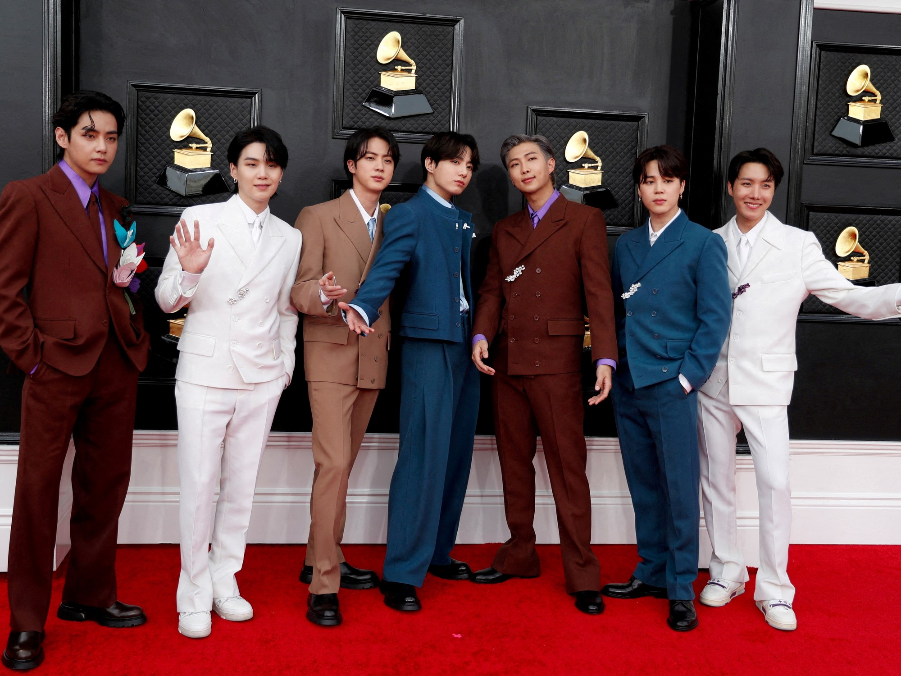

Seguramente tu tambien has buscado con que distraerte,
y realmente te traigo el grupo indicado para seguir.
Son muy conocidos aunque en estos momentos ellos esten en el servicio militar, la actual banda de grupo BTS son un hit mundial, han logrado
records que ningún otro artista asiatico ha logrado, como el ser nominados 5 veces para Grammy demostrando su impacto en la
industria musical y el primer grupo surcoreano de k-pop que lidera la lista de discos más populares de EE.UU.
Música:
Su primer canción llamada "NO MORE DREAM" fue la canción por la cual fueron conocidos por primera vez el 13 de junio del 2013.
Cuando se integraron a Big Hit Entertainment
Inicios
BTS un grupo de adolecentes surcoreanos que se embarcaron en una historia que nisiquiera ellos sabian que iban a lograr, alcanzando streams masivos hechos por sus fans llamados Army, siendo colocados en puestos del primer lugar en solitario y grupal.
Un historial que no cualquiera puede lograr, comenzó en una pequeña empresa de Corea la cual estaba en quiebra, buscando adolecentes que quiseran ser parte de dicha banda y llamando a algunos que encontraran por las calles como el caso de Kim Seokjin el cual cuenta que solo iba a subir al autobus cuando alguien le ofrecio unirse a bts.
Uno de ellos y el más conocido,
Jeon Jung Kook quien tenia apenas 13 años era el más pequeño en la banda y se unio porque reconocio a RM el lider de la ahora banda BTS quien antes de entrar ya era compositor y habia estado en otro grupo por el cual adapto el nombre de "Rap Monster" para sus inicios.
Incluso como Kim Taehyung el cual solamente acompaño a un amigo a que hiciera su audición y fue el quien termino queandose.
En el caso de Kim Namjoon, Park Jimin, Jung Hoseok y Min Yoongi quienes si fueron a audicionar por su parte para poder ser integrantes de la banda.
Para poder conocer más sobre ellos da click aquí
BANGTAN SOYEONDAN
Ahora ellos actuan en solitario debido a la situacion con el SM (servicio militar) y nos demuestran que siguen siendo los mejores aun no estando juntos con sus grandes participaciones en diferentes eventos a nivel mundial como es el caso de Jeon Jungkook el cual participo en la ceremonia de inicio para Qatar en el 2022 con su canción "DREAMERS"
el cual dejo impresionados a muchos debido a que también participo un cantante famoso de Qatar con él.
Para saber más sobre sus presentaciones y albums en solitario ingrese a el link= "Albúm en solitario"